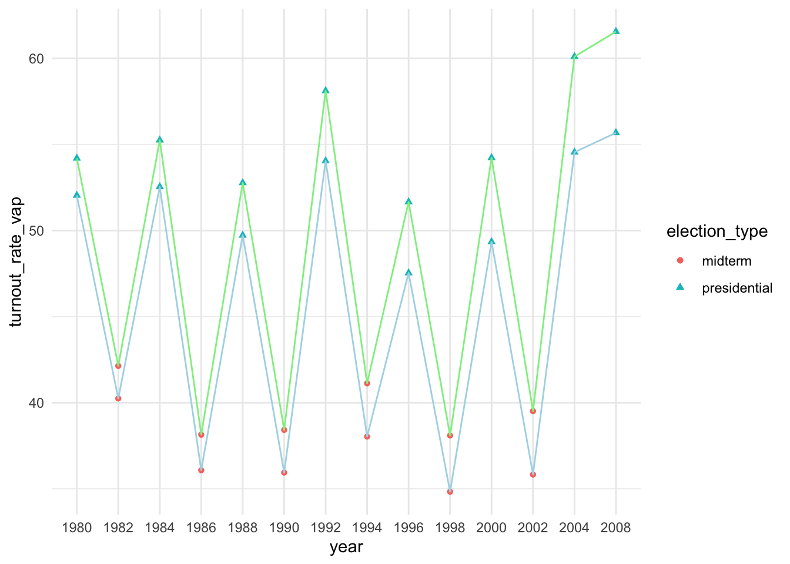

library(tidyverse)
library(modelsummary)
library(tinytable)
library(gtsummary)Lesson 1
Introduction to forecast modelling
Exercises - Bias in Self-reported Turnout
Surveys are frequently used to measure political behavior such as voter turnout, but some researchers are concerned about the accuracy of self-reports. In particular, they worry about possible social desirability bias where in post-election surveys, respondents who did not vote in an election lie about not having voted because they may feel that they should have voted. Is such a bias present in the American National Election Studies (ANES)? The ANES is a nation- wide survey that has been conducted for every election since 1948. The ANES conducts face-to-face interviews with a nationally representative sample of adults. The table below displays the names and descriptions of variables in the turnout.csv data file.
First we load all the necessary packages.
Question 1
Load the data into R and check the dimensions of the data. Also, obtain a summary of the data. How many observations are there? What is the range of years covered in this data set?
if (interactive()) {
turnout_file <- "../1 - Introduction - Forecast Modeling/turnout.csv"
} else {
turnout_file <- "../../1 - Introduction - Forecast Modeling/turnout.csv"
}
turnout <- read.csv(turnout_file)
dims <- dim(turnout)
obs <- nrow(turnout)
years <- range(turnout$year)In this dataset there is 14 observations. The dimensions are 14 by 9 and the year-range is from 1980 to 2008.
head(turnout) year VEP VAP total ANES felons noncit overseas osvoters
1 1980 159635 164445 86515 71 802 5756 1803 NA
2 1982 160467 166028 67616 60 960 6641 1982 NA
3 1984 167702 173995 92653 74 1165 7482 2361 NA
4 1986 170396 177922 64991 53 1367 8362 2216 NA
5 1988 173579 181955 91595 70 1594 9280 2257 NA
6 1990 176629 186159 67859 47 1901 10239 2659 NAQuestion 2
Calculate the turnout rate based on the voting age population or VAP. Note that for this data set, we must add the total number of eligible overseas voters since the VAP variable does not include these individuals in the count. Next, calculate the turnout rate using the voting eligible population or VEP. What difference do you observe?
turnout <- turnout %>%
select(everything()) %>%
mutate(vap_os = VAP + na.omit(overseas),
turnout_rate_vap = (total / vap_os) * 100,
turnout_rate_vep = (total / VEP) * 100,
turnout_rate_diff = turnout_rate_vep - turnout_rate_vap,
election_type = if_else(year / 4 == round(year / 4),
"presidential", "midterm"),
year = as_factor(year))
turnout %>%
select(starts_with("turnout_rate")) %>%
mutate('VAP %' = turnout_rate_vap,
'VEP %' = turnout_rate_vep,
DIFF = turnout_rate_diff) %>%
select(-starts_with("turnout_rate")) %>%
datasummary_skim(fmt = 3,
fun_numeric = list(
'n(years)' = NUnique,
Mean = Mean,
SD = SD,
Min = Min,
# Median = Median,
Max = Max,
Histogram = function(x) ""))| n(years) | Mean | SD | Min | Max | Histogram | |
|---|---|---|---|---|---|---|
| VAP % | 14 | 45.457 | 8.125 | 34.832 | 55.674 | |
| VEP % | 14 | 48.949 | 8.886 | 38.093 | 61.554 | |
| DIFF | 14 | 3.493 | 1.274 | 1.892 | 5.880 |
turnout %>%
ggplot() +
geom_point(aes(x = year, y = turnout_rate_vap, shape = election_type, color = election_type)) +
geom_line(aes(x = year, y = turnout_rate_vap, group = 1), color = "lightblue") +
geom_point(aes(x = year, y = turnout_rate_vep, shape = election_type, color = election_type)) +
geom_line(aes(x = year, y = turnout_rate_vep, group = 1), color = "lightgreen") +
theme_minimal()
The Voting Eligible Population (green) generally has a higher turnout rate than the Voting Age Population. It is on average 3.493. There is also generally higher turnout for the presidential elections than there are for the midterms.
Question 3
Compute the difference between VAP and ANES estimates of turnout rate. How big is the difference on average? What is the range of the difference? Conduct the same comparison for the VEP and ANES estimates of voter turnout. Briefly comment on the results.
turnout <- turnout %>%
select(everything()) %>%
mutate(vap_anes = ANES - turnout_rate_vap,
vep_anes = ANES - turnout_rate_vep)
turnout %>%
select(ends_with("_anes")) %>%
mutate('ANES - VAP' = vap_anes,
'ANES - VEP' = vep_anes) %>%
select(!ends_with("_anes")) %>%
datasummary_skim(fmt = 3,
fun_numeric = list(
'n(years)' = NUnique,
Mean = Mean,
SD = SD,
Min = Min,
# Median = Median,
Max = Max,
Histogram = function(x) ""))| n(years) | Mean | SD | Min | Max | Histogram | |
|---|---|---|---|---|---|---|
| ANES - VAP | 14 | 20.329 | 3.893 | 11.061 | 26.172 | |
| ANES - VEP | 14 | 16.836 | 3.346 | 8.581 | 22.489 |
ANES is on average 20.3 points off of the actual VAP turnout. This is not very convincing. In the same manner, ANES is on average 16.8 points off of the actual VEP turnout.
Question 4
Compare the VEP turnout rate with the ANES turnout rate separately for presidential elections and midterm elections. Note that the data set excludes the year 2006. Does the bias of the ANES vary across election types?
- I have already decided which the types of elections in Question 2.
turnout %>%
select(turnout_rate_vep, ANES, vep_anes, election_type) %>%
gtsummary::tbl_summary(by = "election_type",
label = list(
turnout_rate_vep = "Voting Eligible Population",
ANES = "ANES estimate",
vep_anes = "Differences between estimates"
),
statistic = list(all_continuous() ~ "{mean} ({min} - {max})"))Characteristic |
midterm |
presidential |
|---|---|---|
| Voting Eligible Population | 40 (38 - 42) | 56 (52 - 62) |
| ANES estimate | 55 (47 - 62) | 74 (70 - 78) |
| Differences between estimates | 15.43 (8.58 - 22.49) | 17.89 (16.45 - 21.34) |
| 1
Mean (Min - Max) |
||
pct_pres <- turnout %>%
select(turnout_rate_vep, ANES, election_type) %>%
mutate(pct_diff = ANES / turnout_rate_vep) %>%
filter(election_type == "presidential") %>%
pull(pct_diff) %>%
mean()
pct_midterm <- turnout %>%
select(turnout_rate_vep, ANES, election_type) %>%
mutate(pct_diff = ANES / turnout_rate_vep) %>%
filter(election_type == "midterm") %>%
pull(pct_diff) %>%
mean()
pct_diff <- pct_midterm - pct_pres
pct <- sapply(list(pct_pres, pct_midterm, pct_diff), round, 3)- It seems that the bias is a little larger when looking at the presidential elections. Then again, if expressed in percentages it is 1.322 for presidential elections and 1.389 for midterms. In my interpretation, at least, the difference of 0.067 is close to nonsubstantial.
Question 5
Divide the data into half by election years such that you subset the data into two periods. Calculate the difference between the VEP turnout rate and the ANES turnout rate separately for each period. Has the bias of the ANES increased over time?
until_1992 <- turnout[1:7,]
pct_pres_until <- until_1992 %>%
select(turnout_rate_vep, ANES, election_type) %>%
mutate(pct_diff = ANES / turnout_rate_vep) %>%
filter(election_type == "presidential") %>%
pull(pct_diff) %>%
mean()
pct_midterm_until <- until_1992 %>%
select(turnout_rate_vep, ANES, election_type) %>%
mutate(pct_diff = ANES / turnout_rate_vep) %>%
filter(election_type == "midterm") %>%
pull(pct_diff) %>%
mean()
pct_diff_until <- pct_midterm_until - pct_pres_until
pct_until <- sapply(list(pct_pres_until, pct_midterm_until, pct_diff_until), round, 3)after_1992 <- turnout[-(1:7),]
pct_pres_after <- after_1992 %>%
select(turnout_rate_vep, ANES, election_type) %>%
mutate(pct_diff = ANES / turnout_rate_vep) %>%
filter(election_type == "presidential") %>%
pull(pct_diff) %>%
mean()
pct_midterm_after <- after_1992 %>%
select(turnout_rate_vep, ANES, election_type) %>%
mutate(pct_diff = ANES / turnout_rate_vep) %>%
filter(election_type == "midterm") %>%
pull(pct_diff) %>%
mean()
pct_diff_after <- pct_midterm_after - pct_pres_after
pct_after <- sapply(list(pct_pres_after, pct_midterm_after, pct_diff_after), round, 3)Then we can compare the before and after
result <- pct_after - pct_until
print(result)[1] 0.010 0.086 0.076Concluding: The bias has become larger, but it is marginal. 0.01, 0.086, 0.076.
Question 6
The ANES does not interview overseas voters and prisoners. Calculate an adjustment to the 2008 VAP turnout rate. Begin by subtracting the total number of ineligible felons and non-citizens from the VAP to calculate an adjusted VAP. Next, calculate an adjusted VAP turnout rate, taking care to subtract the number of overseas ballots counted from the total ballots in 2008. Compare the adjusted VAP turnout with the unadjusted VAP, VEP, and the ANES turnout rate. Briefly discuss the results.
- First we remove ineligible felons and non-citizens.
adjusted_vap_2008 <- turnout %>%
select(everything()) %>%
filter(year == 2008) %>%
mutate(adj_vap = VAP - (felons + noncit))- Then we remove the overseas votes from 2008
adjusted_vap_2008 <- adjusted_vap_2008 %>%
select(everything()) %>%
mutate(total = total - osvoters,
adj_turnout_rate_vap = (total / VAP) * 100)
rates <- adjusted_vap_2008 %>%
select(ANES, starts_with("turnout_rate_"), adj_turnout_rate_vap) %>%
select(-ends_with("diff"))
rates %>% tt()| ANES | turnout_rate_vap | turnout_rate_vep | adj_turnout_rate_vap |
|---|---|---|---|
| 78 | 55.67409 | 61.55433 | 56.75916 |
It seems that the adjusted VAP turnout rate is a 1.0850669 percentage points higher when not including the overseas votes.